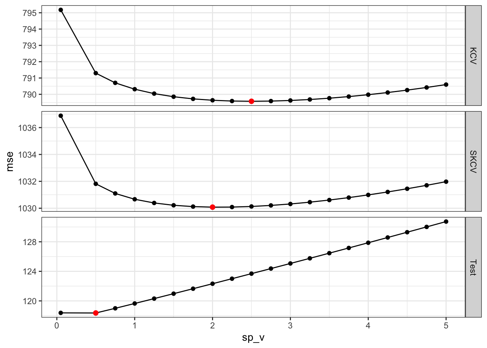

9 Spatial Cross-validation
K-fold and repeated K-fold cross-validation methods can under-estimate test MSE (that is how good the trained model is in predicting \(y\) in a new dataset) when the observations in the train data are not independent with each other. A typical example would be spatial correlation of the error term. In many applications including environmental and agricultural events, spatially correlated error is commonly observed. In order to combat the problem of test MSE underestimation by regular K-fold cross-validation (hereafter, simply KCV), you can use spatial K-fold cross-validation (SKCV) instead.
Packages to load for replication
Goals of this section
- Examine the consequence of using KCV when the data are spatially correlated
- Understand how SKCV is conducted and how to implement it in R
- Examine the difference in the estimate of MSEs from KCV and spatial KCV
- Check if the optimal hyper-parameters suggested by KCV and SKCV are any different
For this section, we will consider the following data generating process.
\[ \begin{aligned} y = \alpha + \beta_1 x - 0.5 \beta_2 x^2 + u \end{aligned} \]
where \(x\) and \(u\) are spatially correlated (which makes \(y\) spatially correlated).
Code to create the dataset
#=== create grids (on top of IL state border) ===#
# any spatial object will do. IL state border is picked
# just because it is easy to get without reading a shapefile
grids_il <-
tigris::counties(
state = "IL",
progress_bar = FALSE
) %>%
st_as_sf() %>%
st_make_grid(n = c(50, 50)) %>%
st_as_sf() %>%
mutate(id := 1:n()) %>%
rename(geometry = x)
#=== set up a model ===#
g_temp <-
gstat(
formula = z ~ 1,
locations = ~ X + Y,
beta = 0,
dummy = T,
model = vgm(
psill = 12,
range = 10,
nugget = 0,
model = "Sph"
),
nmax = 50
)
#=== get coordinates ===#
xy <-
st_coordinates(st_centroid(grids_il)) %>%
data.table()
#=== generate error and x ===#
set.seed(24034)
error <-
predict(g_temp, newdata = xy, nsim = 1, debug.level = 0) %>%
data.table()
var1 <-
predict(g_temp, newdata = xy, nsim = 1, debug.level = 0) %>%
data.table()
#=== assign the generated values to the data ===#
data <-
grids_il %>%
mutate(
e = error[, sim1],
x = var1[, sim1],
y_det = x - x^2,
y = y_det + e
)Here is the data we are going to work with (see the side note for the code to generate the data):
dataSimple feature collection with 2500 features and 5 fields
Geometry type: POLYGON
Dimension: XY
Bounding box: xmin: -91.51308 ymin: 36.9703 xmax: -87.01993 ymax: 42.50848
Geodetic CRS: NAD83
First 10 features:
id geometry e x y_det y
1 1 POLYGON ((-91.51308 36.9703... 7.019440 1.0553782 -0.0584449 6.960995
2 2 POLYGON ((-91.42322 36.9703... 7.338642 0.3638512 0.2314635 7.570106
3 3 POLYGON ((-91.33335 36.9703... 6.916762 0.5415847 0.2482707 7.165033
4 4 POLYGON ((-91.24349 36.9703... 6.616489 -0.2135838 -0.2592019 6.357287
5 5 POLYGON ((-91.15363 36.9703... 6.545079 -0.2505120 -0.3132682 6.231811
6 6 POLYGON ((-91.06376 36.9703... 5.694419 -0.4592597 -0.6701791 5.024240
7 7 POLYGON ((-90.9739 36.9703,... 5.315004 -0.2554948 -0.3207723 4.994232
8 8 POLYGON ((-90.88404 36.9703... 5.675372 0.4401116 0.2464134 5.921785
9 9 POLYGON ((-90.79418 36.9703... 5.690427 0.2916046 0.2065713 5.896998
10 10 POLYGON ((-90.70431 36.9703... 5.728366 0.7202707 0.2014808 5.929847We have three main variables, y (dependent variable), x (explanatory variable), and e (error). Figure 9.1 shows how they are spatially distributed. It also shows that all of them are spatially positively correlated.
g_error <-
ggplot(data = data) +
geom_sf(aes(fill = e), color = NA) +
scale_fill_viridis_c() +
theme_void()
g_x <-
ggplot(data = data) +
geom_sf(aes(fill = x), color = NA) +
scale_fill_viridis_c() +
theme_void()
g_y <-
ggplot(data = data) +
geom_sf(aes(fill = y), color = NA) +
scale_fill_viridis_c() +
theme_void()
g_y | g_x | g_error 
We are going to use gam() with k \(= 30\) and sp \(= 0\) as the model in conducting KCV and spatial KCV. Let’s first create folds for KCV and SKCV. First, here is KCV folds.
# 6-fold cross-validation
# A tibble: 6 × 3
splits id type
<list> <chr> <chr>
1 <split [2083/417]> Fold1 KCV
2 <split [2083/417]> Fold2 KCV
3 <split [2083/417]> Fold3 KCV
4 <split [2083/417]> Fold4 KCV
5 <split [2084/416]> Fold5 KCV
6 <split [2084/416]> Fold6 KCV Figure 9.2 is the visualization of the spatial distribution of training and test datasets for each of the five folds for KCV.
Code
plot_kcv_data <-
kcv_folds %>%
rowwise() %>%
mutate(folds = list(
rbind(
analysis(splits) %>% mutate(type = "training"),
assessment(splits) %>% mutate(type = "test")
)
)) %>%
dplyr::select(id, folds) %>%
unnest() %>%
st_as_sf()
ggplot(plot_kcv_data) +
geom_sf(aes(fill = type), color = NA) +
facet_wrap(id ~ .) +
theme_void()
Now, let’s create a five spatially clustered folds using the spatialsample package for SKCV.
set.seed(2493)
(
skcv_folds <-
spatial_clustering_cv(data, v = 6, cluster_function = "hclust") %>%
mutate(type := "SKCV")
)# 6-fold spatial cross-validation
# A tibble: 6 × 3
splits id type
<list> <chr> <chr>
1 <split [1861/639]> Fold1 SKCV
2 <split [2231/269]> Fold2 SKCV
3 <split [1968/532]> Fold3 SKCV
4 <split [2206/294]> Fold4 SKCV
5 <split [2260/240]> Fold5 SKCV
6 <split [1974/526]> Fold6 SKCV Figure 9.3 presents the spatial distribution of training and test datasets for each of the five folds for SKCV.
Code
plot_kcv_data <-
skcv_folds %>%
rowwise() %>%
mutate(folds = list(
rbind(
analysis(splits) %>% mutate(type = "training"),
assessment(splits) %>% mutate(type = "test")
)
)) %>%
dplyr::select(id, folds) %>%
unnest() %>%
st_as_sf()
ggplot(plot_kcv_data) +
geom_sf(aes(fill = type), color = NA) +
facet_wrap(id ~ .) +
theme_void()
Let’s now implement KCV and SKCV. Since we observe the true generating process, we can calculate how good the fitted curve is compared to true \(E[y|X]\) in addition to observed \(y\) for the left-out samples in each fold.
(
cv_results <-
rbind(kcv_folds, skcv_folds) %>%
#=== make it possible to apply function row by row ===#
rowwise() %>%
#=== train the model ===#
mutate(gam_fit = list(
gam(y ~ s(x, k = 6), data = analysis(splits))
)) %>%
#=== get mse ===#
mutate(mse_data = list(
assessment(splits) %>%
data.table() %>%
.[, y_hat := predict(gam_fit, newdata = .)] %>%
.[, .(
mse_obs = mean((y - y_hat)^2), # MSE
mse_true = mean((y_det - y_hat)^2) # deviation from E[y|x]
)]
)) %>%
dplyr::select(id, type, mse_data) %>%
unnest() %>%
data.table()
)Warning: `cols` is now required when using unnest().
Please use `cols = c(mse_data)` id type mse_obs mse_true
1: Fold1 KCV 2.625128 6.220206
2: Fold2 KCV 2.626409 6.018337
3: Fold3 KCV 2.737267 6.048986
4: Fold4 KCV 2.165378 6.022577
5: Fold5 KCV 2.577193 6.071233
6: Fold6 KCV 2.491927 6.163692
7: Fold1 SKCV 1.546412 5.124519
8: Fold2 SKCV 1.627511 5.086778
9: Fold3 SKCV 2.075309 8.094507
10: Fold4 SKCV 2.564556 6.308404
11: Fold5 SKCV 8.237099 4.688359
12: Fold6 SKCV 3.905704 6.441366You can see that MSE values (mse_obs) are mostly greater and also more variable for SKCV. By averaging MSE over folds by CV type,
cv_results[, .(mse_obs = mean(mse_obs)), by = type] type mse_obs
1: KCV 2.537217
2: SKCV 3.326099So, indeed KCV provides lower estimate of test MSE than SKCV. Now, it is important to recognize the fundamental difference in what is measured by KCV and SKCV. KCV measures the accuracy of the trained model applied to the new data points that are located inside the area where the train data covers geographically. SKCV, on the other hand, measures the accuracy of the trained model applied to the new data points that are outside the area where the train data covers geographically. In other words, it measure the modeling accuracy when the trained model is applied to a new region. So, KCV does overstate the accuracy of the model if your interest is applying the model to a new region.
cv_results[, .(mse_true = mean(mse_true)), by = type] type mse_true
1: KCV 6.090839
2: SKCV 5.9573229.1 Hyper-parameter tuning
Now, let’s see whether KCV and SKCV lead to different tuning results using gam(). Here, we fix k at \(30\) and vary sp to find the best sp value. The following function takes an sp value and return MSE values from both KCV and SKCV.
get_mse <- function(sp) {
cv_results <-
rbind(kcv_folds, skcv_folds) %>%
#=== make it possible to apply function row by row ===#
rowwise() %>%
#=== train the model ===#
mutate(gam_fit = list(
gam(y ~ s(x, k = 30, sp = sp), data = analysis(splits))
)) %>%
#=== get mse ===#
mutate(mse_data = list(
assessment(splits) %>%
data.table() %>%
.[, y_hat := predict(gam_fit, newdata = .)] %>%
.[, .(
mse_obs = mean((y - y_hat)^2), # MSE
mse_true = mean((y_det - y_hat)^2) # deviation from E[y|x]
)]
)) %>%
dplyr::select(id, type, mse_data) %>%
unnest() %>%
data.table() %>%
.[, sp_v := sp]
return(cv_results)
}Here is an example at sp \(= 0.5\).
get_mse(0.5)[]Warning: `cols` is now required when using unnest().
Please use `cols = c(mse_data)` id type mse_obs mse_true sp_v
1: Fold1 KCV 2.6107678 6.213120 0.5
2: Fold2 KCV 2.6116715 6.039916 0.5
3: Fold3 KCV 2.7443189 6.084217 0.5
4: Fold4 KCV 2.1724188 6.040122 0.5
5: Fold5 KCV 2.6088837 6.074788 0.5
6: Fold6 KCV 2.4559528 6.147874 0.5
7: Fold1 SKCV 4.2759947 6.045903 0.5
8: Fold2 SKCV 1.4296273 7.991988 0.5
9: Fold3 SKCV 1.6658406 8.524963 0.5
10: Fold4 SKCV 0.9765504 7.309499 0.5
11: Fold5 SKCV 1.7216495 11.168836 0.5
12: Fold6 SKCV 1.1060965 8.363119 0.5Let’s try sp = 0, 0.2, 0.4, 0.6, 0.8, 1, 1.2, 1.4, 1.6, 1.8, 2.
cv_results <-
mclapply(
seq(0, 2, length = 10),
function(x) get_mse(x),
mc.cores = detectCores() - 2
) %>%
rbindlist()Panel (a) of Figure 9.4 plots MSE against the value of sp for KCV and SKCV. As you can see both of the suggested 0.2 as the MSE-minimizing value of sp. Panel (b) of Figure 9.4 shows the squared deviations from \(E[y|x]\) as a function of sp, which tells us what value of sp would result in the curve that is the closest to \(E[y|x]\), the quantity of interest. Both KCV and SKCV suggest that sp value of 0.2 is the best. This means that both KCV and SKCV based on train data successfully identified the optimal value of sp. Remember that we do not really care about prediction accuracy. That is not our ultimate goal. Using KCV instead of SKCV is likely to result in a more optimistic view of how good the model actually is as we saw earlier. However, the purpose of cross-validation is tuning, but not trying to measure the accuracy of our trained model (at least for those who do not care about prediction itself).
Code
cv_plot_data <-
cv_results[
,
.(mse_obs = mean(mse_obs), mse_true = mean(mse_true)),
by = .(type, sp_v)
]
ggplot(cv_plot_data) +
geom_line(aes(y = mse_obs, x = sp_v)) +
geom_point(aes(y = mse_obs, x = sp_v)) +
facet_grid(type ~ ., scale = "free_y") +
ylab("MSE") +
xlab("sp") +
theme_bw()
ggplot(cv_plot_data) +
geom_line(aes(y = mse_true, x = sp_v)) +
geom_point(aes(y = mse_true, x = sp_v)) +
facet_grid(type ~ ., scale = "free_y") +
ylab("Square Deviation from E[y|x]") +
xlab("sp") +
theme_bw()